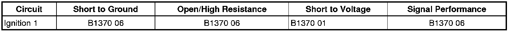

Supplemental Inflatable Restraints
DTC B1370
Diagnostic Instructions
* Perform the Diagnostic System Check - Vehicle (Initial Inspection and Diagnostic Overview) prior to using the diagnostic procedure.
* Review Strategy Based Diagnosis (Initial Inspection and Diagnostic Overview) for an overview of the diagnostic approach.
* Diagnostic Procedure Instructions (Initial Inspection and Diagnostic Overview) provides an overview of each diagnostic category.
DTC Descriptors
DTC B1370 01
- Device Ignition 1 Circuit Short to Battery
DTC B1370 06
- Device Ignition 1 Circuit Short to Ground or Open
Diagnostic Fault Information

Circuit/System Description
The inflatable restraint sensing and diagnostic module (SDM) monitors the ignition 1 signal from the ignition switch. When the vehicle ignition switch is placed in the RUN or CRANK position, the switch supplies voltage to the SDM ignition 1 input terminal. If an open, short to voltage, or short to ground in this SDM ignition 1 circuit is detected, then DTC B1370 will set.
Conditions for Running the DTC
Ignition voltage is between 9-16 volts.
Conditions for Setting the DTC
The following conditions exist for at least 10 seconds.
B1370 01
The SDM detects a short to battery in the ignition 1 voltage circuit when the switch is in the OFF position.
B1370 06
The SDM detects a short to ground or an open in the ignition 1 voltage circuit when the ignition switch is in RUN or CRANK.
Action Taken When the DTC Sets
* The SDM commands the AIR BAG indicator ON via serial data communications.
* The SDM determines its power mode only from the GMLAN power mode messages and discards the ignition 1 input for the remainder of the ignition cycle.
Conditions for Clearing the DTC
* The condition responsible for setting the DTC no longer exists.
* A history DTC will clear once 255 malfunction-free ignition cycles have occurred.
Reference Information
Schematic Reference
SIR Schematics ([1][2]Air Bag Systems)
Connector End View Reference
Component Connector End Views (Connector Views)
Description and Operation
SIR System Description and Operation (Description and Operation)
Electrical Information Reference
* Circuit Testing (Component Tests and General Diagnostics)
* Connector Repairs (Component Tests and General Diagnostics)
* Testing for Intermittent Conditions and Poor Connections (Component Tests and General Diagnostics)
* Wiring Repairs (Component Tests and General Diagnostics)
Scan Tool Reference
Control Module References (Programming and Relearning) for scan tool information
Circuit/System Testing
Important: When removing connectors inspect for damage or corrosion. Damage or corrosion in the following requires repair or replacement of the affected.
* SDM
* SDM wiring harness
1. Ignition OFF, remove the under hood AIR BAG fuse.
2. Ignition ON, with a DMM, test for 9-16 volts between the voltage supply side and ground.
• If not the specified range, refer to DTC B1370 (B1370) in wiring systems and power management.
3. Ignition OFF, disconnect the harness connector at the SDM.
4. Ignition OFF, disconnect the X2 harness connector at the underhood fuse block.
5. Ignition OFF, test for less then 1 ohm between the ignition 1 voltage circuit terminal 32 and the under hood fuse block terminal 47.
• If greater then the specified range, test the circuit for an open/high resistance.
6. Ignition ON, test for less then 1 volt between the ignition 1 voltage circuit terminal 32 and the under hood fuse block terminal 47.
• If greater then the specified value, test the circuit for a short to voltage.
7. If all circuits test normal, replace the SDM.
Repair Instructions
Perform the Diagnostic Repair Verification (Verification Tests) after completing the diagnostic procedure.
* Control Module References (Programming and Relearning) for SDM replacement, setup, and programming
* SIR/SRS Wiring Repairs (Component Tests and General Diagnostics)